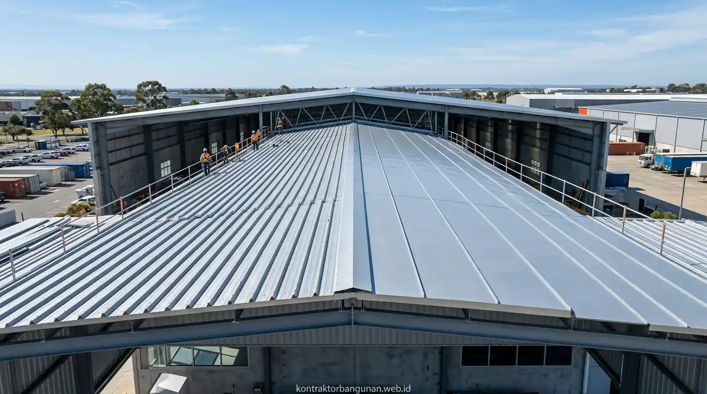

Bagaimana Urutan Tahapan Utama Dalam Konstruksi Gudang Struktur Baja?
Tahapan pembangunan gudang baja terbagi menjadi tiga fase utama: perencanaan perhitungan struktur sipil, proses fabrikasi profil baja di *workshop*, serta instalasi perakitan kerangka di lokasi proyek.
Pelaksanaan proyek bagi pemula wajib mengikuti sistematika teknis berikut untuk menjamin keandalan struktur:
- Perencanaan Arsitektur dan Perhitungan Pembebanan: Mengukur dimensi luas bentang tanpa kolom (clear span) serta menghitung analisis beban angin, beban mati, dan beban gempa menggunakan perangkat lunak teknik sipil berstandar SNI.
- Pekerjaan Tanah dan Fondasi Pedestal: Melakukan penggalian tanah, pengecoran tiang pancang/cakar ayam, serta pemasangan angkur baja (anchor bolt) dengan tingkat toleransi presisi milimeter.
- Fabrikasi Baja di Workshop: Pemotongan profil baja WF/H-Beam, pengelasan plat buhul (gusset plate), pembuatan lubang baut (drilling/punching), serta pembersihan permukaan melalui metode sandblasting.
- Pengecatan Proteksi Anti-Karat: Melapisi seluruh permukaan baja menggunakan cat dasar zinc chromate atau epoxy primer untuk menghentikan risiko korosi jangka panjang.
- Eraksi Rangka Baja (Erection): Mengangkat kolom dan kuda-kuda baja (*rafter*) menggunakan mobile crane, lalu menguncinya menggunakan baut bertegangan tinggi (high-strength bolts Grade A325/F10T).
- Pemasangan Gording dan Penutup Atap: Perakitan gording C-channel, ikatan angin (bracing rod), serta lembaran penutup atap galvalum/zincalume berkualitas.
- Uji Sambungan Las: Lakukan pengujian tak rusak (Non-Destructive Testing / NDT) seperti Ultrasonic Test pada sambungan las kritis sebelum komponen dikirim ke lokasi pengerjaan.
- Torsi Kunci Baut: Selalu gunakan kunci torsi kalibrasi (*calibrated torque wrench*) untuk memastikan kekuatan jepit baut struktural memenuhi standar SNI Baja 2026.
- Manajemen Logistik Site: Urutkan pengiriman profil baja berdasarkan tahapan ereksi agar area proyek tetap leluasa untuk manuver crane dan alat berat.
Mengapa Struktur Baja WF Sangat Efisien Untuk Bangunan Gudang Bentang Lebar?
Profil baja WF (Wide Flange) memiliki rasio kekuatan terhadap berat (*strength-to-weight ratio*) yang sangat tinggi, memungkinkan pembuatan ruang simpan yang lapang tanpa terhalang kolom tengah.
| Indikator Evaluasi | Rangka Baja WF / H-Beam | Rangka Beton Bertulang |
|---|---|---|
| Kecepatan Perakitan Site | Sangat Cepat (Sistem Baut Knockdown) | Lambat (Masa Pengeringan Cor Beton) |
| Kebutuhan Kolom Tengah | Fleksibel (> 30 Meter Clear Span) | Terbatas (Membutuhkan Kolom Rapat) |
| Bobot Beban Fondasi | Ringan (Hemat Kuantitas Pancang) | Sangat Berat (Membutuhkan Pancang Dalam) |
| Nilai Sisa Aset (Resale) | Tinggi (Material Dapat Didaur Ulang) | Rendah (Biaya Pembongkaran Mahal) |
Kebebasan tata ruang yang dihasilkan oleh struktur baja memaksimalkan manuver armada forklift serta penataan rak heavy-duty di dalam area logistik pergudangan komersial.

Proses eraksi rangka baja WF gudang bentang lebar oleh tim insinyur dan operator crane berpengalaman dari Kontraktor Bangunan.
Mengapa Mempercayakan Proyek Kepada Kontraktor Bangunan Sangat Menguntungkan?
Bekerja sama dengan Kontraktor Bangunan profesional memberikan jaminan bahwa seluruh tonase baja yang digunakan dihitung secara presisi sesuai Standar Nasional Indonesia (SNI) tanpa pemborosan bahan.
Keunggulan komersial menyerahkan proyek gudang Anda kepada pelaksana legal:
- Penyusunan RAB Terikat Transparan: Menghitung anggaran berdasarkan volume tonase bersih (kg) dan BoQ detail sehingga terhindar dari risiko pembengkakan biaya di pertengahan jalan.
- Tenaga Ahli Berlisensi K3: Perakitan rangka baja di ketinggian dilaksanakan oleh tim sertifikasi resmi dengan protokol keselamatan kerja konstruksi tingkat tinggi.
- Garansi Retensi Struktur Resmi: Menyediakan jaminan kepastian garansi tertulis atas ketegakan kerangka, kekedapan atap, dan kekuatan sambungan baut struktur.
Apabila Anda berencana membangun pusat distribusi barang atau fasilitas pabrik yang kokoh, cepat selesai, dan efisien, memercayakan pengerjaannya kepada Kontraktor Bangunan terpercaya adalah pilihan paling rasional dan menguntungkan.
Apa Saja Kesalahan Fatal yang Harus Dihindari Pemula Dalam Proyek Gudang Baja?
Kesalahan mendasar pada proyek gudang baja adalah mengabaikan pengujian daya dukung tanah serta mengabaikan ketebalan lapisan cat anti-karat pada lingkungan korosif.
Beberapa kekeliruan teknis yang berpotensi merugikan pengembang antara lain:
- Kesalahan Posisi Angkur (Anchor Misalignment): Melesetnya posisi angkur pada fondasi beton menyebabkan piringan alas kolom baja (base plate) tidak dapat terpasang rapat dan mengubah titik sumbu struktur.
- Pengencangan Baut Tidak Sesuai Torsi: Mengencangkan baut sambungan utama tanpa mengukur standar torsi kunci pemicu celah kelonggaran saat diterpa beban angin kencang atau getaran mesin pabrik.
- Mengabaikan Sistem Ikatan Angin (Bracing): Lupa memasang kabel atau batang bracing pada dinding dan atap yang berfungsi meredam gaya lateral akibat beban seismik dan terpaan angin.
FAQ seputar Gudang Struktur Baja
Kesimpulan Praktis
Penerapan panduan konstruksi gudang baja secara terencana merupakan langkah strategis untuk mengamankan nilai investasi aset industri Anda. Kecepatan instalasi dan efisiensi biaya yang ditawarkan menjadikan struktur baja sebagai pilihan utama pengembang modern. Siapkan pembangunan pusat logistik dan fasilitas operasional bisnis Anda secara presisi dan terjamin garansi. Hubungi tim Kontraktor Bangunan kami sekarang untuk konsultasi teknik dan penawaran RAB presisi!